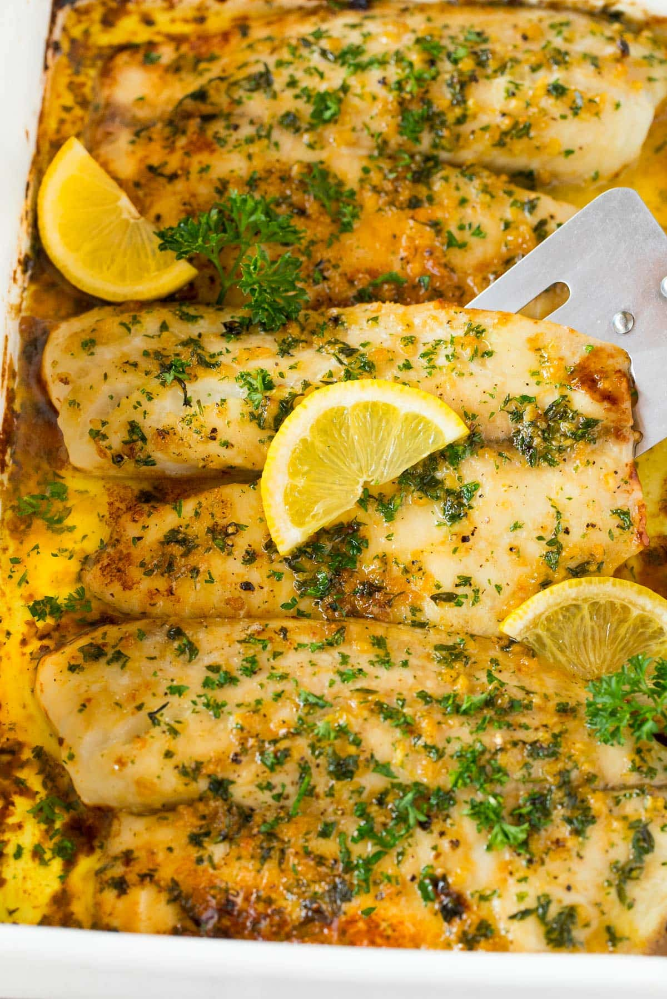

Butter Poached Tilapia

Description
A buttery, lemony, flaky dish that warms the soul. Pairs well with sides such as mashed potatoes and veggies.
Ingredients
- 2 tilapia fillets (can be frozen)
- 1 large lemon
- 1/3 cup salted butter
- 2 tbsps minced garlic
- 1 tsp dried parsley flakes
- pepper
Steps
- Preheat oven to 400.
- Grease the pan with your butter then melt the remaining butter.
- Juice the lemon.
- Rinse the fillets under cool water and then pat dry with paper towels.
- Place the fillets into the buttered baking dish.
- Mix the lemon juice, butter, and garlic together, then drizzle over fish.
- Sprinkle fillets with parsley and pepper.
- Bake in the oven for 15-20 minutes. Fish is done when it reaches 145 degrees F.
- Serve.